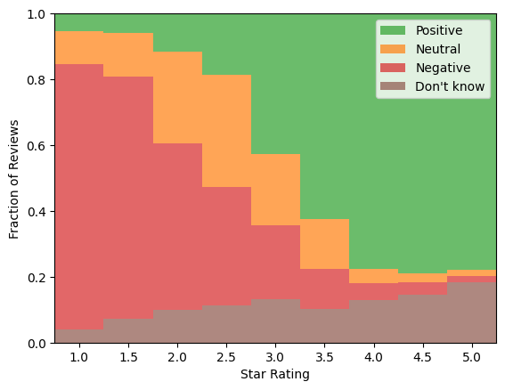
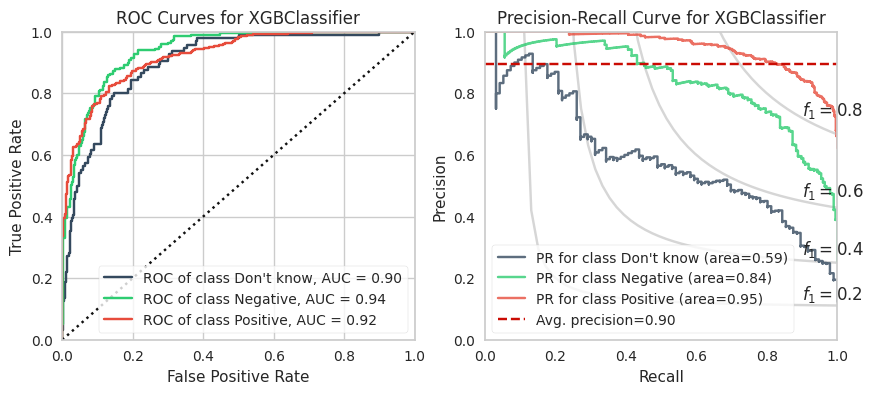

Hi, I'm Stephen!
I made this app called OVINO to help me discover awesome and the best priced wines.
How does it work?
OVINO sifts through millions of wine reviews to determine the price users paid and their price satisfaction. By comparing LCBO's prices with what users paid, OVINO tallies user price opinions and identifies the most favorably priced wines.
So, if you're on the hunt for some tasty and well priced wines, give OVINO a try!
If you'd like to learn more, continue reading below or check out my blog for details!
The tech.
Data Science: SciKit-Learn, Pandas, Sentence-Transformers (S-BERT), spaCy, XGBoost, LightGBM
Data Management: AWS S3, GitHub Actions, PostgreSQL, Bash scripts
Front-end: Flask
Languages: Python, SQL, Bash, YAML, HTML
The problem.
My eyes strain from reading tiny terse descriptions about arbitrarily priced bottles. I often give up and buy the coolest looking bottle, which is fun but a risky $20.
Unfortunately, LCBO's app is underused and lacks ratings. Wine recommendations from the LCBO staff have also flopped even after feedback and revised recommendations.
My needs are simple: access to star ratings and 3rd-party price recommendations for wines immediately available near me.
The price recommender.
Vivino is a very popular wine app containing millions of wines. Many of the wines have over 100,000 reviews!
I noticed about 1 in 200 user reviews state the price paid and the sentiment for the price. My idea is to crowdsource these price sentiments to judge a wine bottle's price at the LCBO. Here's a schematic of the idea.

The machine learning approach.
How do I sift through all of these reviews? With some exploratory data analysis to start! Here's a link to one of my posts that takes a bite into the raw data.
Identifying reviews containing prices is straightforward where if there is a dollar sign '$' followed by a set of numbers then that is the price. This reduces millions of reviews to roughly 50k with prices that users paid.
Trying to extract the price sentiment from 50k reviews is a lot of human effort. This is where the power of machine learning comes in! To train a machine learning model, we need to have a training set of data to work with. I manually labelled a subset of the reviews with price sentiments. Here's a link to a summary of the training data for reviews with price-sentiments; it has figures like this one:

The next step is to convert text into numbers, so we can use machine learning tools to understand the reviews. I describe the approach in detail here. I use two Natural Language Processing methods: the 'bag of words' model and 'sentence embeddings'. Think of this as an analog to the 'wide & deep' recommender if you're acquainted with recommendation systems. The 'bag of words' model identifies keywords linked to positive and negative price sentiments, encompassing a 'wide' array of potential words.
Unfortunately, these models aren't very good when there are multiple sentiments to disentangle since it does not care about word order. For example, "good flavours and soft notes, would not buy again" has multiple sentiments. Sentence embeddings are trained on an extensive text dataset to capture the essence of a text segment. This 'deep' technique tackles the complex task of translating textual nuances into numerical sequences. The combination of these techniques produces a very long list of numbers for every review.
The last step is to find the best machine learning model that can predict the correct price sentiments given a review (or, more precisely, the long list of numbers described earlier). This requires experimentation. I use 6 different machine learning models and compare their performances here.
Here are the results for the best model, XGBoost! If you're not familiar with these sorts of plots, the performance is pretty darn good for NLP problems with an imbalanced dataset (i.e., unequal proportions of sentiment categeories).

Bonus feature for OVINO: I noticed the LCBO provides both the sugar content and ABV for most bottles. Sugar and alcohol make up most of the calories. So, I provide an estimate for each bottle's total calories. This is an estimate! I am not dietitian.